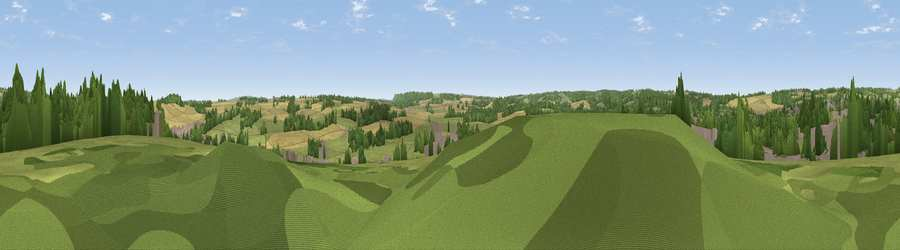

Windmill Hill
#35582 in England · top 53% of its area beats it · near AltonWhere it is
The exact computed spot (SU 72225 38575). Click the marker for map links.
The view, rendered

A 360° render of this exact spot computed from the terrain model, tree cover and land cover — summer colours, afternoon light, calibrated against photographs of famous viewpoints. Real trees, hedges and buildings will differ in detail.
The panorama
Grey silhouette: terrain skyline in each direction (720 bearings, Earth curvature and refraction included). Dashed green: skyline with trees (+15 m) and buildings (+8 m) as obstacles. Blue strip: how far the ground is visible on each bearing.
Where the view opens
Wedge length = distance to the farthest visible ground on that bearing (vegetation-aware). Rings at 10, 25 and 50 km.
What fills the view
34% grassland · 25% woodland · 24% cropland · 17% built-up
Angular shares of the visible panorama (visual magnitude), not map area. Landscape diversity 0.59 (0–1 Shannon).
Key numbers
More beautiful places nearby
The staircase of upgrades: each row has a higher view potential than everything closer. Driving times are estimates from straight-line distance, calibrated against real road routing — check an actual route before setting out.
| Place | Direction | Drive | Score |
|---|---|---|---|
| Viewpoint near Holybourne | N · 3 km | ~7 min | 42.2 |
| Viewpoint near East Worldham | ESE · 3 km | ~7 min | 44.8 |
| Viewpoint near Holybourne | N · 4 km | ~9 min | 51.2 |
| Wick Hill | SE · 4 km | ~10 min | 52.4 |
| Viewpoint near Selborne | SSE · 6 km | ~12 min | 52.7 |
| Noar Hill | SSE · 7 km | ~15 min | 62.3 |
| Viewpoint near Steep | S · 12 km | ~22 min | 68.7 |
| Viewpoint near Buriton | S · 18 km | ~31 min | 75.3 |
51.14190, -0.96895 · source: osm peak · position refined by local search. Computed location — check access rights before visiting.